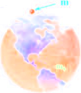

Newton's law of universal gravitation
Richiamiamo brevemente le conoscenze sul moto dei pianeti che si avevano prima di Newton (1642-1727).
Intorno al 1540 era stata avanzata da Copernico l'ipotesi eliocentrica: il sole, e non la terra, era il corpo celeste attorno al quale si svolgeva il moto dei pianeti. Successivamente, le posizioni assunte da questi nel tempo erano state oggetto di numerose e accurate misure da arte di Brahe (tra il 1576 e la fine del secolo), misure su cui si basò Keplero per formulare, tra il 1600 e il 1620, le sue tre leggi.
Prima legge: I pianeti percorrono orbite ellittiche intorno al sole che occupa uno dei due fuochi dell'ellisse;
Seconda legge: Durante il moto di rivoluzione di un pianeta intorno al Sole, il corpo celeste mantiene costante la propria velocità areale;
Terza legge: Il quadrato del periodo di rivoluzione di ogni pianeta è proporzionale al cubo del semiasse maggiore dell'ellisse: T2 = ka3 (i valori della costante k sono dati in Tab. 1).

Le tre leggi di Keplero danno una descrizione cinematica del moto dei pianeti.
La spiegazione dinamica venne trovata da Newton nel 1666 e resa nota solamente nel 1687. Da essa prese corpo la teoria della gravitazione universale, di cui diamo una traccia del ragionamento di Newton, inizialmente approssimato.
Le orbite dei pianeti, pur essenso certamente ellittiche, sono molto prossime a circonferenze; immaginiamo allora che siano circolari. Se questo è vero e se la velocità areale è costante, il moto di un pianeta è circolare uniforme: infatti, ricordando la (11.1), si ha
dA/dt = ½ rdθ/dt
la costanza della velocità areale e di r dà dθ/dt = costante.
La forza che agisce sul pianeta, permettendogli di percorrere una traiettoria circolare con velocità costante, deve essere esclusivamente centripeta, cioè senza componente tangenziale, figura 2 e si scrive.
essendo T il periodo di rivoluzione, m la massa e r il raggio dell'orbita del pianeta. Utilizziamo ora la terza legge di Keplero T2 = kr3, confondendo il raggio della circonferenza con il semiasse maggiore dell'ellisse, così che la forza diviene
Questo è il primo risultato fondamentale:
la forza esercitata dal sole sui pianeti, che incurva la loro orbita, è inversamente proporzionale al quadrato della distanza dal sole.
Consideriamo il sistema sole-terra: la forza esercitata dal sole sulla terra può quindi essere scritta
nell'ipotesi che il caso sole-terra non sia specifico, ma che invece una formula simile valga per qualsiasi coppia di corpi, la forza esercitata dalla terra sul sole ha un'espressione analoga, risultando in particolare proporzionale alla massa del sole:
per il principio di azione e reazione, FT,S deve essere uguale in modulo a FS,T. Dall'uguaglianza si ottiene mTkS = mSkT. Definendo la costante
abbiamo per il modulo della forza sole-terra
La direzione è quella della retta congiungente il sole alla terra.
La formula ottenuta è molto semplice ed è simmetrica nei due corpi; Newton ipotizzò che si trattasse di una formula universale ed enunciò la seguente legge di gravitazione universale:
date due masse qualsiasi, di dimensioni trascurabili rispetto alla distanza mutua, tra di esse agisce una forza attrattiva diretta lungo la retta congiungente le due masse, il cui modulo dipende direttamente dal prodotto delle masse e inversamente dal quadrato della distanza.
La costante di proporzionalità γ è una costante universale, che non dipende dai valori delle masse e dalla geometria del sistema, ma è caratteristica dell'interazione gravitazionale.
Innumerevoli verifiche sperimentali, soprattutto in campo astronomico, hanno confermato la correttezza dell'ipotesi. La prima verifica è dovuta sempre a Newton. La (11.3) deve valere anche per un corpo di massa m posto sulla terra, che è un corpo sferico di massa mT e raggio rT: per la forza subita dal corpo scriviamo
Questa formula è valida se si ammette che un corpo a simmetria sferica eserciti una forza come se la massa fosse tutta concentrata nel suo centro; la prova di questa proprietà fu una delle cause che ritardò la pubblicazione della (11.3). D'altra parte F = mg per cui
Però Newtwon non conosceva né il valoredi γ né la massa della terra. Tuttavia, con riferimento al sistema terra-luna, si può scrivere
per la forza esercitata dalla terra sulla luna, centripeta per la luna; segue γmT = ω2rL2 e dunque dal periodo di rotazione della luna attorno alla terra e dalla distanza terra-luna, tabella 11.1, è possibile determininare il prodotto γmT e quindi g.
Con i valori oggi noti l'accordo è perfetto. Al tempo di Newton il valore stimato per la distanza terra-luna era sbagliato e solo dopo una misurazione astronomica più precisa Newton poté trovare un buon accordo tra g e γmT/r2T (altro fatto che ritardò la pubblicazione della teoria).
La misura diretta dei γ e quindi la primna determinazione della massa della terra, venne effettuata da Cavendish nel 1798; egli si servì di una bilancia di torsione per misurare la forze di attrazione tra due masse sferiche, misura molto difficile essendo la forza dell'ordine di 10− N a causa del piccolo valore di γ.
Le determinazioni più recenti danno per γ e per la massa della Terra:
γ = 6.67 10−11 m3/(kg s2)
Si notiche che solo conoscendo γ si possono determinare le masse dei corpi celesti, come vedremo nell'esempio 11.5.
La (11.3) mostra che la forza gravitazionale è una forza centrale: viene così chiarito il perché della validità della seconda legge di Keplero. Più avanti si vedrà come si spiegano la prima e la terza legge.
Sottolineamo che, a differenza delle forze finora considerate, che si manifestano al contatto (macroscopico) tra i corpi, la forza gravitazionale si manifesta a distanza, senza che le masse vengano a contatto. In effetti tutte le interazioni fondamentali conosciute sono forze a distanza, che differiscono però nel raggio di azione (oltre che per altre proprietà): la forza gravitazionale e la forza tra cariche elettriche hanno la stessa dipendenza dalla distanza (1/r2) e si dice che il loro raggio di azione è infinito, invece la forza forte e qualla debole decrescono molto più rapidamente con la distanza e sono efficaci solo a livello subatomico.
Altre caratteristiche notevoli della forza gravitazionale tra due corpi sono costituite dall'indipendenza rispetto a diversi fattori, quali lo stato di moto relativo, la presenza di materia interposta e proprietà specifiche come stato di aggregazione e composizione chimica.
Bilancia di torsione. Esperimento di Cavendish
La bilancia di torsione funziona secondo lo stesso principio del pendolo di torsione (par. 7.14). Se all'asta orizzontale sospesa nel centro al filo, Fig. 11.10, si applica una coppia di forze di momento M = Fl, il filo subisce tensione e sviluppa un momento di reazione proporzionale all'angolo θ di rotazione: in equilibrio Fl = kθ e della misura di θ si può calcolare F.
Si tratta di uno strumento molto sensibile, in grado cioè di misurare forze molto piccole, fino a 10−9 N. Storicamente la bilancia di torsione è servita a Coulomb (1785) per determinare la forza che si esercita tra cariche elettriche e a Cavendish (1798) per misurare la costante γ della (11.3).
Nell'esperimento di Cavendish due piccole masse sferiche m sono fissate agli estremi dell'asta e due masse sferiche M molto maggiori sono poste vicino alle masse piccole, fig. 11.11, in cui il sistema è visto dall'altro, cioè guardando lungo il filo. Le forze gravitazionali sulle masse piccole formano una coppia che fa ruotare l'asta fino al raggiungimento dell'equilibrio. Successivamente si inverte la posizione delle sfere grandi e in definitiva si misura l'angolko 2θ e così si calcola γ.
Numericamente, con m1 = 5 ⋅ 10−2 kg e m2 = 500 kg, un'asta lunga l = 0.8 m, una distanza tra i centri delle sfere contigue r = 0.2 m, un filo di costante elastica k = 3.93 ⋅ 10−6 Nm/rad, si ha una deviazione θ = 8.5 ⋅ 10−3 rad (≈ 0.5°), un momento M = 3.34 ⋅ 10−8 Nm e una forza F = 4.17 ⋅ 10−8 = γ m1 m2/r12 dalla quale si ricava γ.
In today's language, the law states that every point mass attracts every other point mass by a force acting along the line intersecting the two points. The force is proportional to the product of the two masses, and inversely proportional to the square of the distance between them.
The equation for universal gravitation thus takes the form
where G = 6.67259 ⋅ 10−11 Nm2/kg2.
g in terms of G
Consider an object on Earth's surface:
mE = mass of Earth = 5.98 ⋅ 1024 kg;
rE = radius of the Earth = 6.38 ⋅ 106 m;
m = mass of the object.
Assume that the Earth is a uniform, perfect sphere. The weight of m is FG = mg. Then we've the equality
which yields g = 9.8 m/s2.
Exercise 1. Two planets have the same average density but their raidi are R1 and R2 = 2⋅R1, respectively. What's the value of g of the second planet with respect to the first.
Solution. g2/g1 = (2⋅R1)2/ R12 = 4. So g2 is four times greater than the first. ■
Satellites
Let a satellite of mass m revolve around the earth in circular orbit of radius r with speed v0. The gravitational pull between satellite and earth provides the necessary centripetal force. mv20/r. We have thus
The angular momentum for satellite motion is given by
L = mvr = mr sqrt(GM/r)
Example 1. Two identical satellites have circular orbits aroun Earth of radii r1 and r2 = 3r1. What is the ratio between the angular momentum of the first with respect the second?
Solution. We have that
L1/L2 = mvr1 / mvr1 = sqrt(GM/r1) / sqrt(GM/3r1) = √3. ■
Free fall of satellites
Newton's understanding of inertia (first law of motion) tells him the Moon (or any object) should keep motive in a straight line in space unless there's a force acting on it. What happen when the force is at right angles to the motion − neither speeding it up not slowing it down, but rather changing its direction? In that case, the object maintains its speed, but its path becomes curved. This is the genius of Newtwon − realizing that the Moon's curved path is really the Moon "falling" to Earth. Yes, thanks to gravitation, the Moon is in a free fall toward Earth, kust like an apple. But it never gets to the ground, because the Moon's inertia is maintaining its motion in a "straight" horizontal line. Newton realized that it is the combination of forward motion (inertia) and downward pull (gravitation) that keeps the Moon moving parallel to Earth. The Moon is falling while simultaneously moving past the earth's curvature, that is, in free fall. The treatement of free fall follow on naturally from the account of uniform circular motion.
A spacecraft in a circular orbit is actually in continuous state of free-fall at an altitude and speed that causes its fall to match the curvature of the Earth at an altitude and speed that causes its fall to match the curvature of the Earth. All objects carried by an orbiting spacecraft are also in a state of free-fall and so appear to be weightless. The feeling of weightlessness that astronauts experience in orbit is not due to the lack of gravity (obviously, no gravity would mean no circular/orbital motion) but rather, because they are constantly in free fall. They are no more weightless than you are when you trip and fall and have yet to hit the ground!. To reach a point where Earth's gravitational pull is reduced to one-millionth of that at the surface, we would have to travel into space a distance of 6-37 million kilometers from Earth (almost 17 times farther away than the Moon).
When we shoot a bullet in a horizontal direction, its motion will consist of two components:
horizontal motion with the original velocity;
An accelerated free fall under the action of gravity force.
As a result of superposition of these two motions, the bullet will describe a parabolic trajectory and hit the groundsome distance away.
Example. Let us climb a ladder and dro an apple from a height of 5m without initial veclocity. Wee see that it reaches the ground on second later (from s = 1/2⋅g⋅t²).
If we give this apple a horizontal velocity of 1 m/s, it will fall 1 meter from us: one can indeed decompone the motion into a vertical motion (identical to the preivous motion and taking on second) and a horizontal motion (the apple moves a horizontal distance of 1 meter during the second). If we give the apple a velocity of 2 m/s, it will fall at a distance of 2 meters. With a velocity of 7900 m/s, it should fall at a distance of 7900 meters from us. Well, in fact, not exactly! This would be true if the Earth was flat but it is round and thus its surface is curved: I have chosen the distance in such a way that by falling a distance of 5 meteres along a trajectory 7900 meters long, the applie still finds itself at a height of 5 meters from the ground, if we can neglect the air friction. In other words, the apple has followed the curvature of the Earth and without friction, would continue indefinitely (by inertia): we have put the apple into orbit! This is the thought experiment called Newtown's cannon.
Of course, the experiment cannot be realized in practice because friction cannot be neglected: at this velocity, friction on the air would completely annhilate the apple. But this experiment shows us that the falling motion of the apple with initial velocity is not different from the motion of a satellite in orbit or even of our natural satellite the Moon. ■
The term micro-g environment (also μg, often referred to by the term microgravity) is more or less synonymous with the terms weightlessness and zero-g, but emphasising that g-forces are never exactly zero—just very small (on the International Space Station (ISS), for example, the small g-forces come from tidal effects, gravity from objects other than the Earth, such as astronauts, the spacecraft, and the Sun, air resistance, and astronaut movements that impart momentum to the space station).